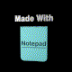
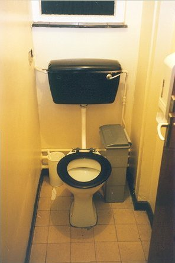

 |
Was lässt sich über unser Blagrave Haus sagen? Tja...es war unsere Heimat für
ein Jahr. Um genau zu sein, für die drei Trimester 2000/2001, in denen wir
zusammen an der Uni Reading studiert haben. Parties, viele gemeinsame Dinner,
faul im Garten in der Sonne liegen (natürlich nur, wenn das Wetter nicht zu
schlecht war ;-) )...und "diverse" andere nette Sachen.
Auf dieser Seite versuchen wir, an die grandiose Zeit, die wir hier hatten, zu erinnern, und an die grossartigen Freunde, die sich hier getroffen haben. Warum ein Foto vom Klo? Nun...ich denke, jeder wird sich an unsere genialen Toiletten erinnern, die ja "eigentlich" zu Weihnachten renoviert werden sollten. Ich warte immer noch, denn ich glaube fest an die Wohnheimverwaltung und ich bin überzeugt, dass ihr unser Glück und Wohlbefinden am Herzen liegt... Diese Hauptseite wurde in neun Sprachen übersetzt: Englisch, Spanisch, Italienisch, Französisch, Deutsch, Holländisch, Kroatisch, Maltesisch und Dänisch. |
